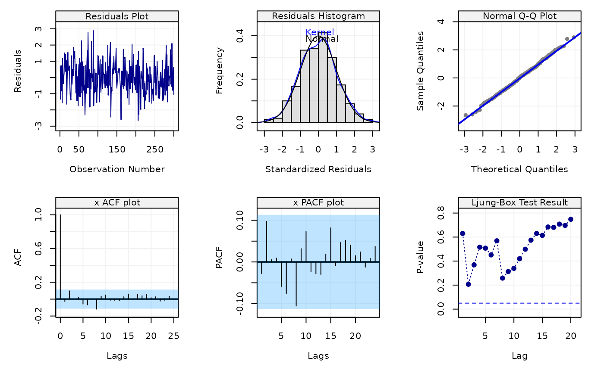
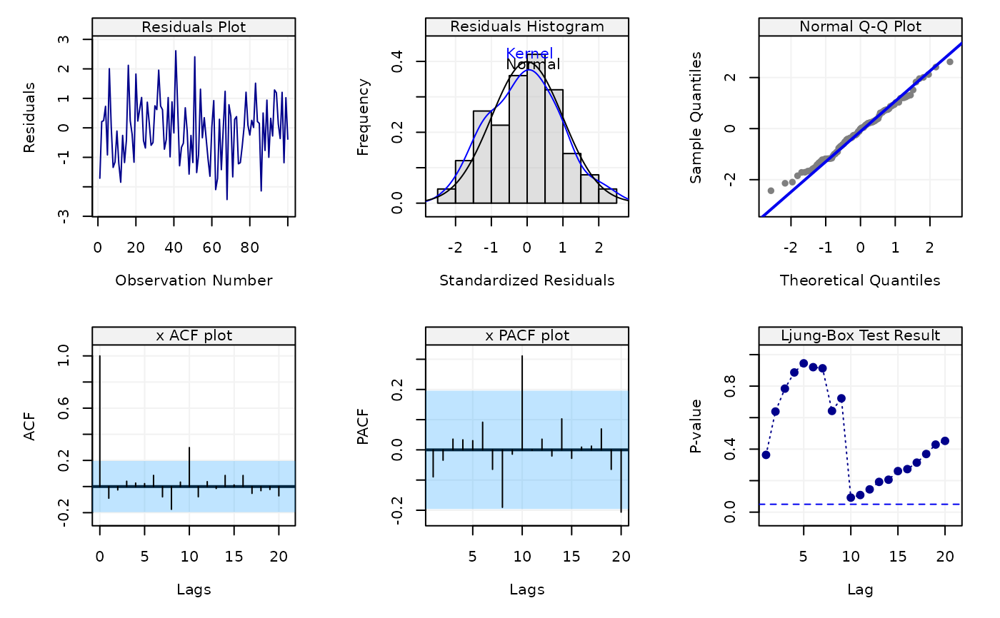

This function can perform (simple) diagnostics on the fitted time series model. It can output 6 diagnostic plots to assess the model, including (1) residuals plot, (2) histogram of distribution of standardized residuals, (3) Normal Q-Q plot of residuals, (4) ACF plot, (5) PACF plot, (6) Box test results.
check(model = NULL, resids = NULL, simple = FALSE)
Arguments
| model | A |
|---|---|
| resids | A |
| simple | A |
Examples
Xt = gen_gts(1000, SARIMA(ar = c(0.5, -0.25), i = 0, ma = 0.5, sar = -0.8, si = 1, sma = 0.25, s = 24, sigma2 = 1)) model = estimate(SARIMA(ar = 2, i = 0, ma = 1, sar = 1, si = 1, sma = 1, s = 24), Xt, method = "rgmwm") check(model)check(model, simple=TRUE)